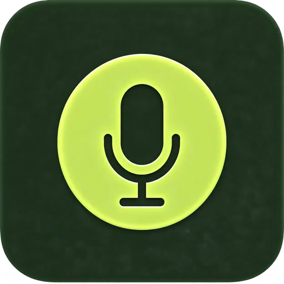
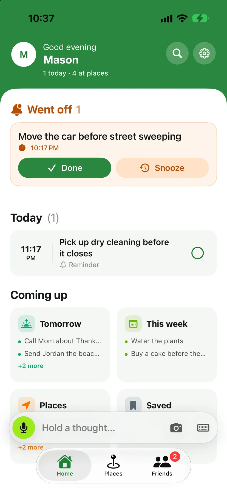
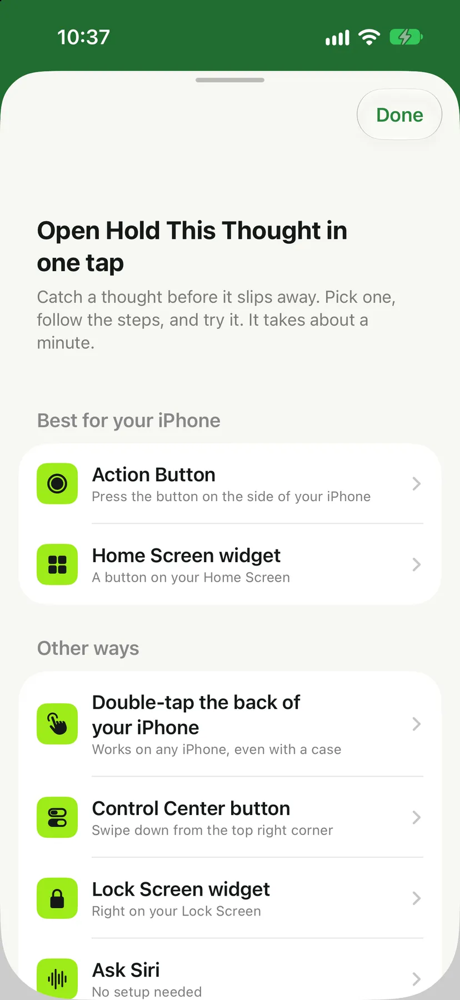
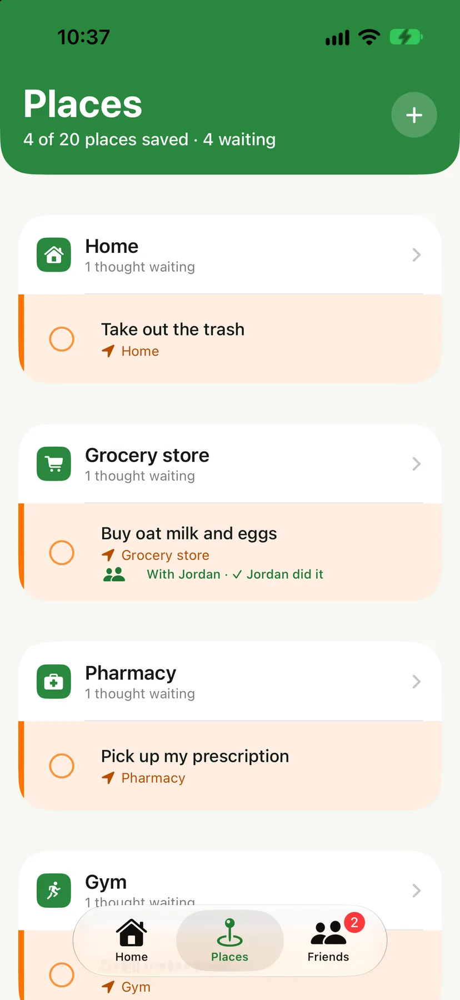
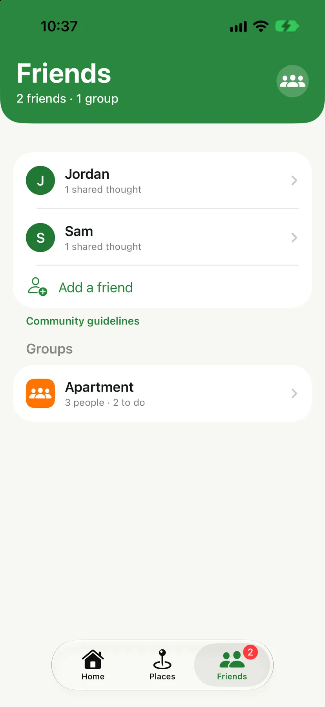

Hold This Thought / Active buildHold This Thought
Building a native Swift iOS reminder app that helps people capture passing thoughts before they disappear. The app turns spoken or typed ideas into helpful prompts based on time, location, calendar events, and saved places. I lead product direction, interface design, and iOS development, from concept testing through live iPhone demos.
SwiftProductUXiOS
Home shows what went off, what’s due today, and what’s coming up.
Tap the Action Button or a Home Screen widget and just talk. It works out when and where to remind you.
Get reminded when you walk into home, the grocery store, or the gym.
Share a thought with a friend or a group. When one of you does it, it comes off both lists.



